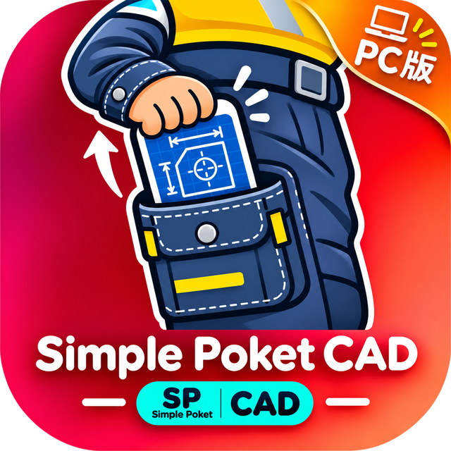
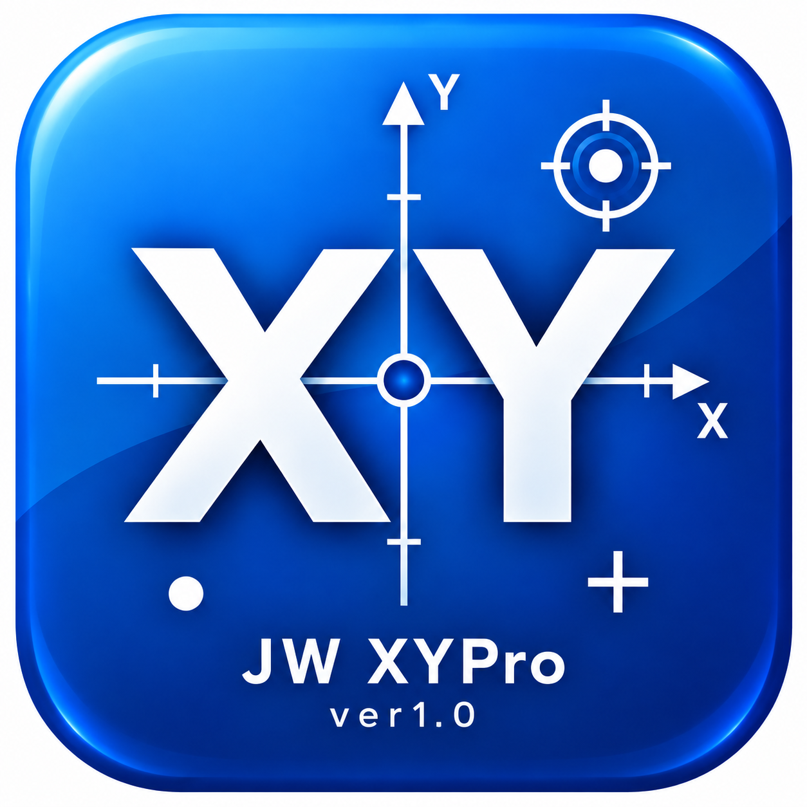

Simple Pocket CAD
現場で手軽に使えるシンプルな2D・3D CADアプリ。
アプリについて詳しく見る →
Simple Poket CAD PC版
Windows向けの無料2D・3D CAD。個人・商用利用OK。 マウス・タッチ・タッチパッドに対応したβ1（x64版）。
PC版の無料ダウンロード →
JW XYPro
測量座標をJw_cadへかんたんに作図できるWindows用ツール。
ソフトについて詳しく見る →🛒 アフィリエイトコーナー
おすすめの工具・ガジェット・便利なアイテムを紹介しています。
おすすめ商品を見る →お問い合わせ
アプリに関するご質問・不具合報告・ご意見などはこちらからどうぞ。
✉ メールでお問い合わせutogcorpo@gmail.com